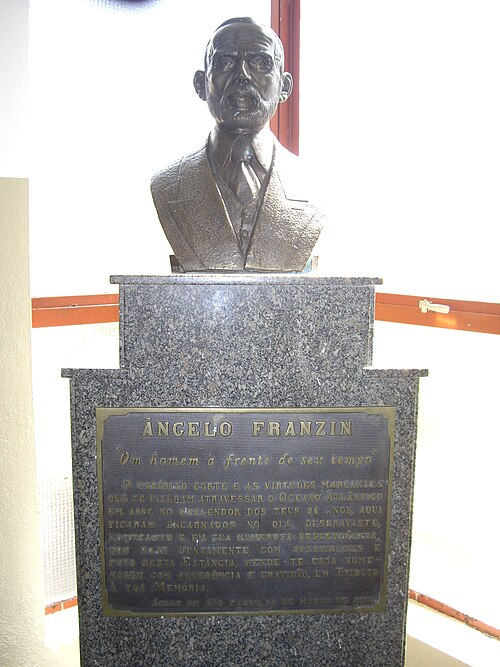
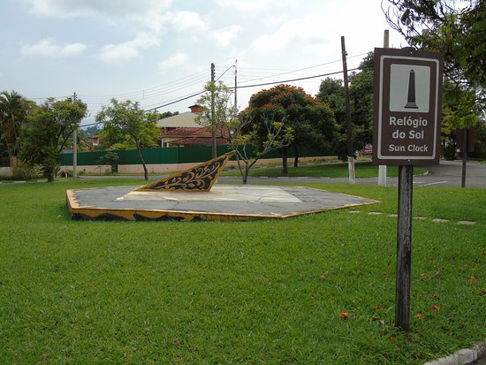
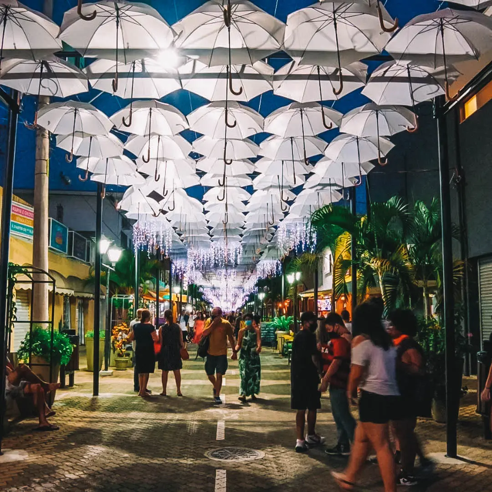
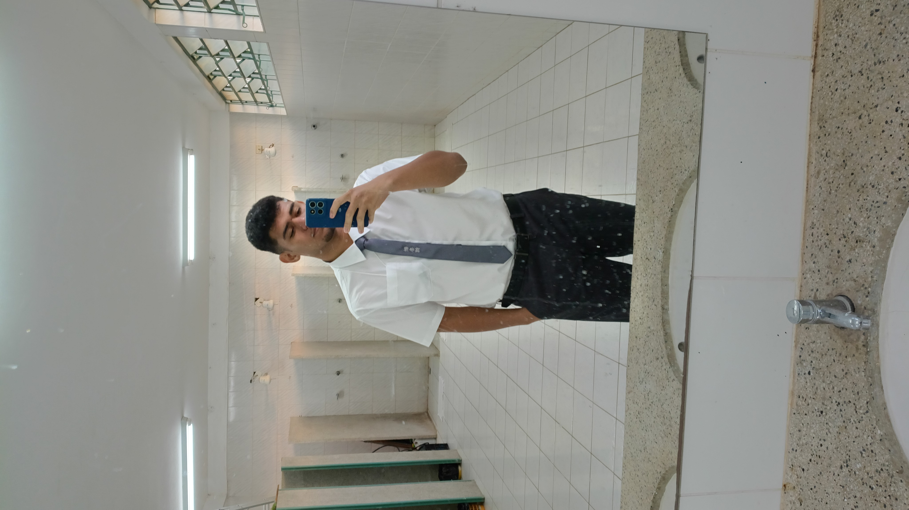

Sobre a Feira Literária
Nossa Feira Literária anual é um evento dedicado a estimular a imaginação, a leitura e a expressão artística dos nossos alunos. É um momento de compartilhar descobertas e celebrar a cultura dentro do ambiente escolar.
📅 Agende-se: Exposição Presencial
Data: 14 de Novembro de 2026
Horário: Aberto ao público a partir das 08:00
Local: Pátio Principal e Salas dos 5ºs Anos
Calculando o tempo...
Tema deste ano: Águas de São Pedro
Este ano, voltamos nossos olhares para a nossa própria casa: Águas de São Pedro. Considerada uma das menores e mais charmosas cidades do Brasil, suas paisagens, suas águas termais e sua história rica servem de inspiração para os trabalhos de todas as turmas.

Parceria Especial: Toni Perecin
Para enriquecer ainda mais nosso projeto, contamos com a ilustre parceria do renomado fotógrafo Toni Perecin. Conhecido por seu olhar sensível e sua capacidade de capturar a essência da vida urbana e da natureza, Toni compartilhou suas técnicas e inspirações com nossos alunos para o projeto "Visão Diferente".
Conheça mais de seu trabalho em sua página no Facebook ou acompanhe pelo Instagram.
Obras de Inspiração (Toni Perecin)
Nossa Inspiração: Águas de São Pedro
Conhecida por sua tranquilidade e suas famosas águas termais, nossa cidade é um verdadeiro museu a céu aberto. Nesta seção, reunimos uma visão geral de como os alunos enxergaram os encantos, a natureza e a arquitetura de Águas de São Pedro durante todo o projeto.
Figuras Históricas de Nossa Cidade

Octávio Moura Andrade
O grande fundador e idealizador de Águas de São Pedro. Na década de 1920, poços de prospecção de petróleo foram perfurados na região pelo Governo do Estado. Em vez de petróleo, encontrou-se água mineral. Em 1940, reconhecendo o valor e as propriedades terapêuticas e medicinais dessas águas, o Dr. Octávio Moura Andrade inaugurou o Grande Hotel São Pedro e fundou a estância.

Ângelo Franzin
Pioneiro essencial para a história da cidade, Ângelo Franzin era o proprietário das terras onde as águas sulfurosas jorravam. Observador, notou que seus animais melhoravam de saúde após beberem daquela água. Em 1934, ele mesmo construiu o primeiro balneário rústico da região. A família Franzin possui um enorme legado histórico e cultural em nosso município.
Visão Geral (Galeria Expandida)



Trabalhos em Produção!
As pesquisas, fotos e produções das turmas do 5º Ano estão guardadas a sete chaves para não estragar a surpresa.
Tudo será revelado aqui no site no dia da nossa Feira Literária.
Calculando o tempo...
Making Off - Visão Diferente
Confira os bastidores das nossas aulas práticas com o fotógrafo Toni Perecin e os momentos de confecção do nosso Almanaque.

.jpg)
.jpg)
.jpg)
.jpg)
.jpg)
.jpg)
Feira Literária - Edição 2025
Reviva os Momentos de 2025!
📖 Acessar Acervo 2025Equipe Organizadora
Um projeto desta magnitude só é possível graças à dedicação e ao carinho de uma equipe apaixonada pela educação e pela arte.
Cátia Cilene de Oliveira
Professora e orientadora, responsável por acompanhar e auxiliar as crianças durante todo o projeto dentro e fora da sala de aula.
Cibelle Pereira
Professora e orientadora, responsável por acompanhar e auxiliar as crianças durante todo o projeto dentro e fora da sala de aula.
Patricia Giani Barbosa
Professora e orientadora (5º Ano A), responsável por guiar os alunos na intensa pesquisa e elaboração do nosso Almanaque oficial.
Isabela Durante
Professora de Arte, auxiliou as crianças durante todo o trabalho e na execução das fotos e projeto visual.

Patrik da Rocha
Apoio tecnológico e estrutural. Responsável pelo desenvolvimento deste site, suporte aos alunos e auxílio na organização geral.